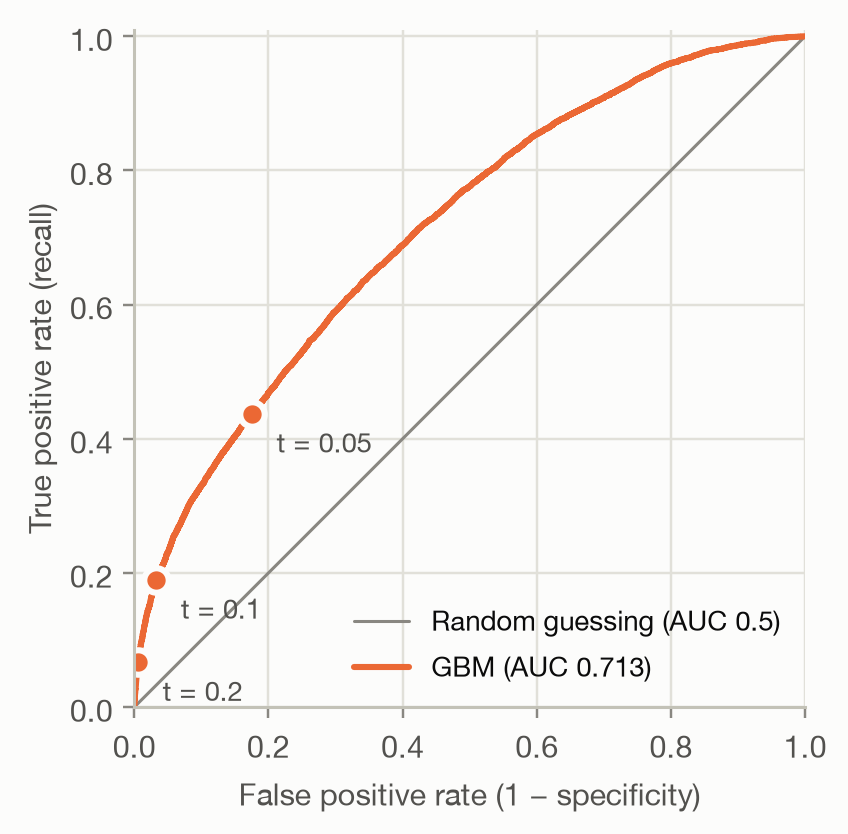
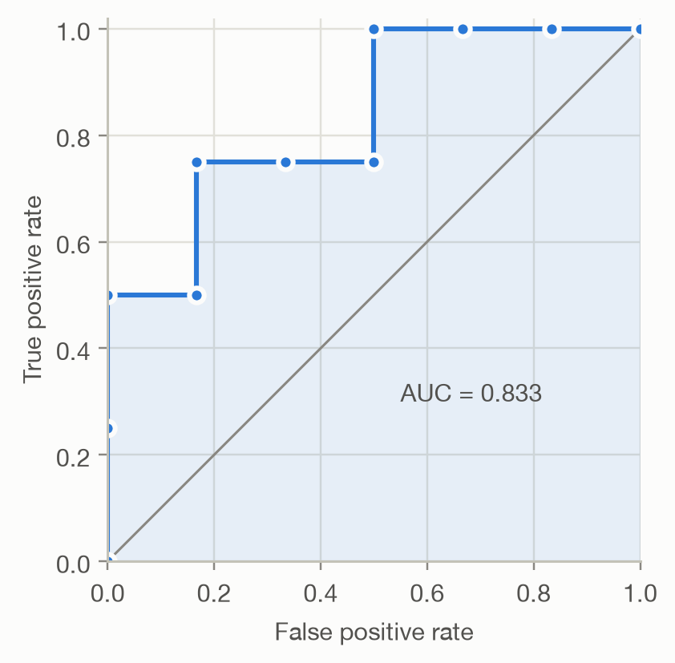
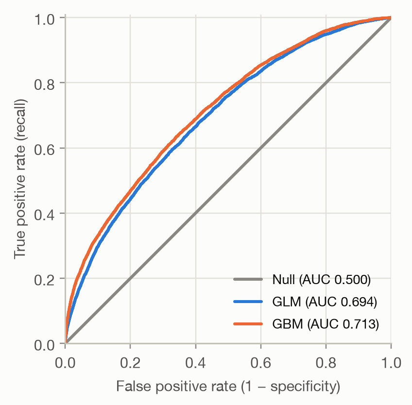

Code
ax = plot_roc(y, {"GBM": b["GBM"]},
operating_points={"t = 0.2": ("GBM", 0.2), "t = 0.1": ("GBM", 0.1), "t = 0.05": ("GBM", 0.05)})
Question answered: does the model rank policies with a claim above policies without one?
On the previous page, each threshold gave one confusion matrix and with it one pair of rates:
The ROC curve (receiver operating characteristic) plots this pair for every possible threshold. A very high threshold flags nothing: the curve starts at (0, 0). Lowering it flags more and more policies until everything is flagged, at (1, 1). The marked points are the thresholds from the previous page:
ax = plot_roc(y, {"GBM": b["GBM"]},
operating_points={"t = 0.2": ("GBM", 0.2), "t = 0.1": ("GBM", 0.1), "t = 0.05": ("GBM", 0.05)})
The diagonal is a model that ranks at random: whatever share of policies it flags, it flags the same share of claims and non-claims. The further a curve bulges towards the top-left corner, the better the model ranks.
Ten policies, sorted by predicted probability, make the construction concrete:
toy_y = np.array([1, 1, 0, 1, 0, 0, 1, 0, 0, 0])
toy_p = np.array([0.9, 0.8, 0.7, 0.6, 0.55, 0.5, 0.4, 0.3, 0.2, 0.1])
toy_roc = roc_points(toy_y, toy_p)
toy_roc.assign(outcome=np.r_[np.nan, toy_y])| threshold | fpr | tpr | outcome | |
|---|---|---|---|---|
| 0 | inf | 0.000000 | 0.00 | NaN |
| 1 | 0.90 | 0.000000 | 0.25 | 1.0 |
| 2 | 0.80 | 0.000000 | 0.50 | 1.0 |
| 3 | 0.70 | 0.166667 | 0.50 | 0.0 |
| 4 | 0.60 | 0.166667 | 0.75 | 1.0 |
| 5 | 0.55 | 0.333333 | 0.75 | 0.0 |
| 6 | 0.50 | 0.500000 | 0.75 | 0.0 |
| 7 | 0.40 | 0.500000 | 1.00 | 1.0 |
| 8 | 0.30 | 0.666667 | 1.00 | 0.0 |
| 9 | 0.20 | 0.833333 | 1.00 | 0.0 |
| 10 | 0.10 | 1.000000 | 1.00 | 0.0 |
Each time the threshold passes a policy, the curve takes a step: up by 1/4 if it had a claim (4 positives), right by 1/6 if it didn’t (6 negatives). A perfect model would go straight up first, then right.
fig, ax = plt.subplots(figsize=(4.2, 4))
ax.plot([0, 1], [0, 1], color=MUTED, linewidth=1)
ax.fill_between(toy_roc["fpr"], toy_roc["tpr"], color=MODEL_COLORS["GLM"], alpha=0.1, linewidth=0)
ax.plot(toy_roc["fpr"], toy_roc["tpr"], color=MODEL_COLORS["GLM"], marker="o", markersize=6,
markeredgecolor="#fcfcfb", markeredgewidth=2)
ax.set(xlabel="False positive rate", ylabel="True positive rate", xlim=(0, 1), ylim=(0, 1.02), aspect="equal")
toy_auc = auc_trapezoid(toy_roc["fpr"], toy_roc["tpr"])
ax.annotate(f"AUC = {toy_auc:.3f}", (0.55, 0.3), color=INK_SECONDARY)
The area under the ROC curve (AUC) condenses the curve into one number between 0 and 1. It has two equivalent readings.
1. Geometric. The area under the curve: 1.0 for a perfect model, 0.5 for random ranking (the diagonal).
2. Probabilistic. The AUC is the probability that a randomly chosen policy with a claim gets a higher score than a randomly chosen policy without one (ties count half):
\[ \text{AUC} = P\left(\hat p_i > \hat p_j \mid y_i = 1,\ y_j = 0\right). \]
The second reading makes clear that AUC measures ranking only. It’s the Mann–Whitney U statistic, and it can be computed from ranks without drawing any curve. On the toy example, 20 of the 4 × 6 = 24 (claim, no-claim) pairs are ordered correctly: 20/24 = 0.833.
On the real test set, both computations agree, and so does a brute-force check that samples random pairs:
rng = np.random.default_rng(1)
p_pos = b.loc[y == 1, "GBM"].to_numpy()
p_neg = b.loc[y == 0, "GBM"].to_numpy()
i, j = rng.integers(len(p_pos), size=1_000_000), rng.integers(len(p_neg), size=1_000_000)
sampled = np.mean(p_pos[i] > p_neg[j]) + 0.5 * np.mean(p_pos[i] == p_neg[j])
roc = roc_points(y, b["GBM"])
pd.Series({
"Area under the curve (trapezoids)": auc_trapezoid(roc["fpr"], roc["tpr"]),
"Rank statistic (Mann–Whitney)": auc_rank(y, b["GBM"]),
"1 million random pairs": sampled,
}, name="AUC").round(4).to_frame()| AUC | |
|---|---|
| Area under the curve (trapezoids) | 0.7127 |
| Rank statistic (Mann–Whitney) | 0.7127 |
| 1 million random pairs | 0.7135 |
Credit scoring and insurance usually report the Gini coefficient (also called the accuracy ratio or Somers’ D) instead:
\[ \text{Gini} = 2 \cdot \text{AUC} - 1. \]
It rescales AUC so that random ranking scores 0 and perfect ranking scores 1. The GBM’s AUC of 0.713 is a Gini of 0.425. The insurance Gini computed from a Lorenz curve is a close relative.
ax = plot_roc(y, {m: b[m] for m in ("Null", "GLM", "GBM")})
The Null model gives everyone the same score, so its curve is the diagonal (AUC 0.5). The GBM (AUC 0.713) ranks better than the GLM (AUC 0.694). Its curve lies on or above the GLM’s at 100% of false positive rates. Where one curve lies above another, that model is better at every threshold in that region. When curves cross, AUC alone hides which model is better in the region you actually operate in.
How large is an AUC of 0.71? There is no universal scale. Whether a claim happens depends largely on chance, so even a perfect pricing model would be far from AUC 1. Judge AUC against the Null model, a simpler baseline and what is achievable for the problem, not against an absolute benchmark.
It ignores calibration. AUC depends only on the order of the predictions. Any transformation that keeps the order leaves it unchanged, even one that ruins the probabilities:
variants = {
"GBM": b["GBM"],
"GBM / 10": b["GBM"] / 10,
"GBM ^ 0.2": b["GBM"] ** 0.2,
}
pd.DataFrame({
"AUC": {k: auc_rank(y, v) for k, v in variants.items()},
"Average predicted probability": {k: v.mean() for k, v in variants.items()},
"Actual claim rate": {k: y.mean() for k in variants},
}).round(3)| AUC | Average predicted probability | Actual claim rate | |
|---|---|---|---|
| GBM | 0.713 | 0.037 | 0.037 |
| GBM / 10 | 0.713 | 0.004 | 0.037 |
| GBM ^ 0.2 | 0.713 | 0.492 | 0.037 |
All three rank equally well, but only the first predicts claim probabilities that resemble reality. If the probabilities themselves matter (pricing, expected cost, the threshold formula on the previous page), measure calibration as well.
It weighs all thresholds equally. AUC averages over the whole curve, including regions no one would use. With 96% non-claims, a false positive rate of just 10% already means 16,327 false alarms on the test set. If only the top few percent of scores will ever be acted on, look at the left part of the curve, at precision–recall curves, or at lift charts.
It is an estimate. The test set is a sample, so AUC has sampling uncertainty. Before concluding that the GBM beats the GLM, we need a confidence interval for the difference, from a bootstrap or DeLong’s test.